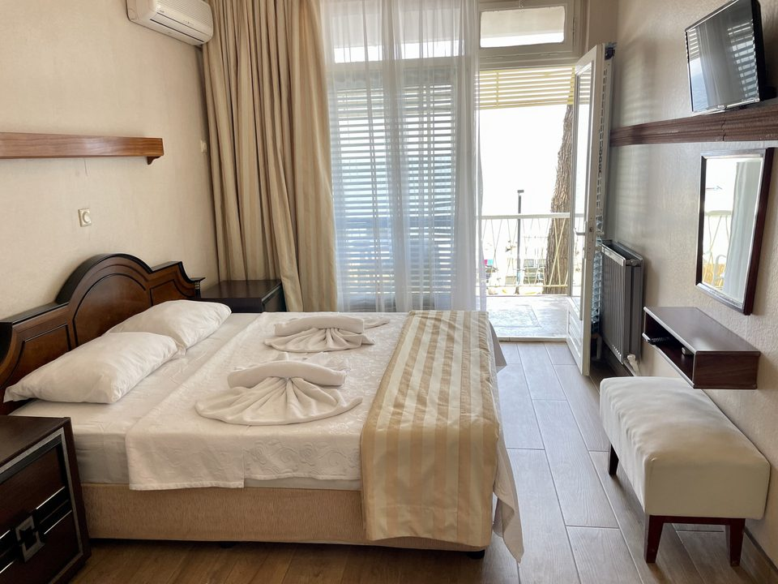
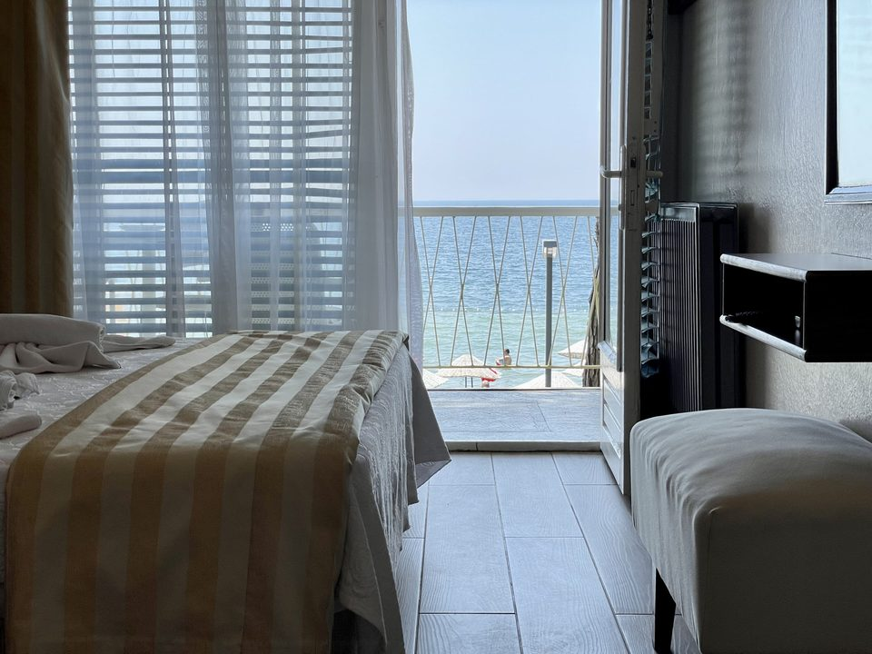
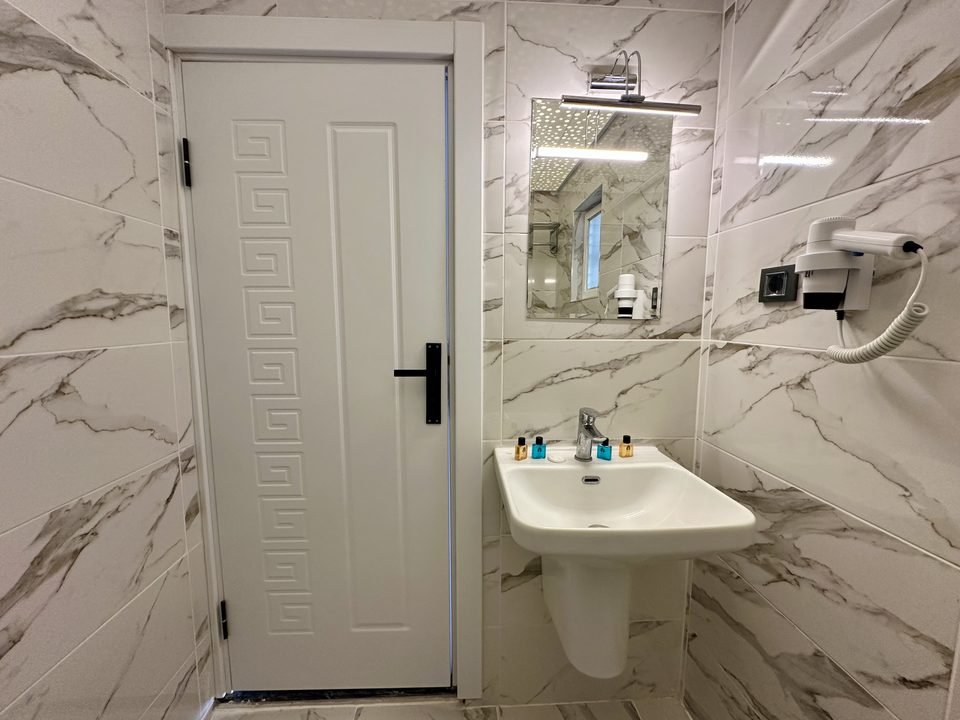

KONAKLAMAYA KISA BİR BAKIŞ
Odanız ve konaklama saatleri
- Oda tanıtımı
- Deniz manzaralı çift kişilik oda
- Odaya giriş
- 14:00’ten itibaren
- Odadan çıkış
- En geç 11:00
Fotoğraflar farklı oda ve banyo görünümlerini içerir. Seçtiğiniz oda tipinin manzarasını, yatak düzenini ve kişi kapasitesini rezervasyon ekranında kontrol edin.
OTELİN GERÇEK FOTOĞRAFLARI
Oda ve banyolara yakından bakın.
Pencerenizin ardında Marmara, gününüzde tatilin hafifliği. Erdek’te denizin yakınında dinlenmek için bir yeriniz var.









Odanızı seçerken
Deniz manzarası sizin için öncelikliyse rezervasyon sırasında seçtiğiniz odanın özelliklerini kontrol edin. Galeride farklı odaları ve alanları görebilir, manzara ve yerleşim tercihlerinizi otelle paylaşabilirsiniz.
Giriş ve çıkış tarihlerinizi, yetişkin sayısını ve varsa çocukların yaşlarını telefonla paylaşın. Otel ekibi size uygun oda seçeneklerini ve koşullarını iletir.
Oda ve banyo olanakları
Otelin oda donanımında klima, televizyon, eşya dolabı ve özel banyo bulunur. Banyo olanakları arasında havlu ve saç kurutma makinesi yer alır. Belirli bir oda düzeni veya özel bir ihtiyacınız varsa rezervasyon öncesinde otelle görüşün.
Balkon, yatak düzeni veya belirli bir katta konaklama gibi tercihlerinizin karşılanıp karşılanamayacağını ayrıca sorun. Tercihlerinizi önceden paylaşmanız, size uygun odayı birlikte değerlendirmenizi kolaylaştırır.
Konaklama paketini birlikte değerlendirin
Oda fiyatını değerlendirirken yalnızca gece tutarını değil, seçtiğiniz tarihler için toplam konaklama bedelini ve paketin kapsamını inceleyin. Kahvaltı ve diğer yemek hizmetleri seçilen pakete göre değişebilir.
Ödeme koşulları, iptal veya değişiklik hakkı ve varsa ek hizmet ücretleri seçilen rezervasyon seçeneğinde belirtilir. Güncel fiyat ve müsaitlik için oteli arayın.
Çocukla veya birden fazla kişiyle konaklama
0–6 yaş ücretsizdir (6 yaş dahil). 7–12 yaş için yetişkin ücretinin %50’si uygulanır. 13 yaş ve üzeri yetişkin kategorisindedir. Ek yatak veya bebek yatağı için otel ekibine danışın.
Birden fazla oda arıyorsanız her oda için kalacak kişi sayısını kontrol edin. Yan yana oda veya belirli bir yatak düzeni ihtiyacınızı otele önceden iletin ve rezervasyon öncesinde teyit alın.